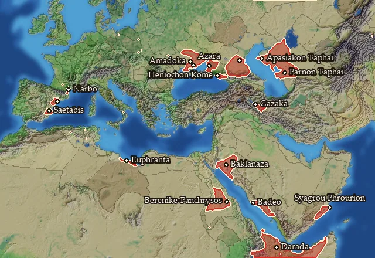
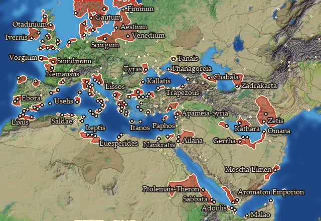
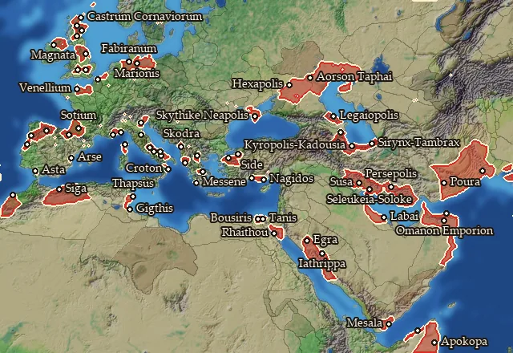
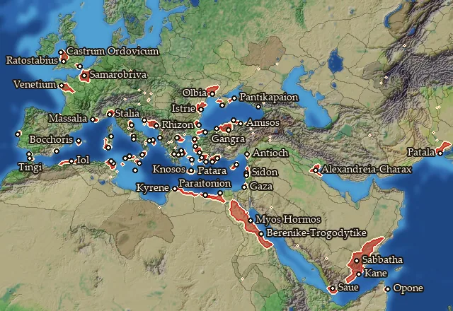

RTR: Imperium Surrectum
RTR: Imperium SurrectumPorts
← all regions and settlements · wiki index
How good a natural harbour the coast gives, before you build anything. It sets how far up the port chain a settlement can go: a coast with no natural harbour allows no port at all, and the others allow up to a Trade Port, a Shipwright or a Dockyard. A Harbour Improvement raises that limit by one level; the best harbours cannot take one, as they are already at the top.
| Harbour | Regions | Builds | Blocks | Effects | Units | Harbour | Regions | Builds | Blocks | Effects | Units |
|---|---|---|---|---|---|---|---|---|---|---|---|
| No natural harbour | 17 | 1 | — | — | — | Natural harbour up to Trade Port | 66 | 3 | — | — | — |
| Natural harbour up to Shipwright | 122 | 5 | — | — | — | Natural harbour up to Dockyard | 71 | 4 | — | — | — |
No natural harbour

On 17 regions.
- Lets you build: 1 building level: Harbour Improvement
Regions with this harbour (17)
Aidaia · Apasiakaia · Borysthenes · Contestania · Elysicea · Heniochia · Ilercavonia · Isondaia · Kassanitis · Maiotis · Notia Basilike Skythia · Notia Trogodytike · Parnia · Pedias Atropatene · Sachalites Kolpos · Syrtis · Thamoudaia
Natural harbour up to Shipwright

On 122 regions.
- Lets you build: 5 building levels: Harbour Improvement, Trade Port, Shipwright, Dockyard, The Cothon of Carthage
Regions with this harbour (122)
Ader Lepqi · Adouli · Adrumet · Aestia · Ager Gallicus · Ailanitos Kolpos · Aitolia · Akragas · Albania · Amastris · Ambrakikos Kolpos · Apamene · Arecomicia · Argolis · Arktonnesos · Aromaton Akroterion · Artabria · Arwad · Aspis · Avionia · Ay-Bushum · Barke · Bastarnia Vetus · Bastetania · Bastetania Maritima · Bithynia · Boiaea · Boreia Hyrkania · Brenaia · Bruttium · Calpe · Cantabria · Carnonacaea · Celticia · Cenomania-Aulercia · Cessetania · Chaldaia · Chios · Cimbria · Conia · Contestania Meridionalis · Cornovia · Deceanglia · Deires · Demetaea · Dumnonia · Durotrigia · Eblania · Ecenia · Edonis · Elis · Elisaria · Elymia · Emporitia · Epi Theron · Etruria · Euesperidai · Finnia · Frisia · Gautia · Gerrhaia · Hellenike Makronia · Hillevionia · Hipparia · Histria · Homeritis · Iliensia · Illyria · Itania · Ivernia · Kaikia · Kalbia · Kallatisia · Kardia · Karmania · Katharrheia · Kianos Kolpos · Kilikia Pedias · Kydoniatis · Kyrnos · Lakonia · Latium · Liburnia · Liksho · Lucania · Magnesia · Malaka · Malaotis · Mamertina · Mauretania Septentrionalis · Menelaites Nomos · Notia Karmania · Omana Kolpos · Omanitis · Osismia · Otadinia · Paphia · Pelousiake · Phanagoreion · Phasis · Pictonia · Poseidonia · Raqemo · Reginia · Rugia · Rush Adir · Sabaike Aithiopia · Salda · Samos · Suionia · Tanaitis · Taokene · Thessalia · Trinobantia · Trogodytike · Tylos · Tyrasia · Umbria · Venedia · Woyxat · Xupon · Zabrutuxun
Natural harbour up to Trade Port

On 66 regions.
- Lets you build: 3 building levels: Harbour Improvement, Trade Port, Shipwright
Regions with this harbour (66)
Anatolike Homeritis · Anatolike Omanitis · Ano Aorsia · Aorsia · Apulia · Aquitania · Asturia · Azania · Boiotia · Bousirites Nomos · Bracarensia · Brigantia · Caledonia · Catuvellaunia · Chaonia · Chattenia · Chaucia · Cornavia · Corsica · Damnonia · Daunia · Dobunnia · Elymais · Emathia · Epichos · Gedrosia · Hasta · Hyrkania · Ingaunia · Kadousia · Kaspiane · Kilikia Tracheia · Kroton · Labeataia · Langobardia · Lechienia · Legaia · Libanophoria · Magnatia · Mauretania Meridionalis · Megale Chersonesos · Menapia · Messenia · Mosyllia · Mysia · Nile Delta · Notia Bithynia · Oreitaia · Oxybia · Paelignia · Pamphylia · Pentria · Persia · Pharanitaia · Saguntia · Sassinia · Shigan · Sousiane · Syrastrene · Taexalia · Thapsos · Turdulorum Oppida · Vasconia · Venellia · Venetia · Yathrib
Natural harbour up to Dockyard

On 71 regions.
- Lets you build: 4 building levels: Trade Port, Shipwright, Dockyard, The Cothon of Carthage
Regions with this harbour (71)
Achaia · Adramitia · Agadir · Ambiana · Antheia · Arabike Aigyptos · Ardiaea · Attike · Ay-Khol · Baliares Maiores · Boreia Trogodytike · Bosporos · Calabria · Campania · Cantiacia · Charakene · Dytike Aigyptos · Epetia-Salonitis · Epikrateia · Euboia · Gazaia · Genuatea · Gylakeia · Halmyris · Hellenike Mariandynia · Ionia · Karaly · Karia · Kimmerikos Bosporos · Koraxia · Korinthia · Kyklades · Kyrenaike · Lesbos · Lykia · Magna Graecia · Maleth · Mapharitis · Mareotis · Mastienia · Mikra Chersonesos · Minoa · Mygdonia · Olbiana · Olbiana-Sardinia · Oponis · Ordovicia · Paphlagonia · Parthenope · Patalene · Phaselia · Picenum · Propontis · Qart Hadasht · Rhegion · Rhodos · Salamina · Saramene · Segobrigia · Siluria · Sinopeia · Ssabwat · Syria · Tagia · Ting · Trinakria · Venetia-Aremorica · Xatiq · Zidun · Ziz · Zur